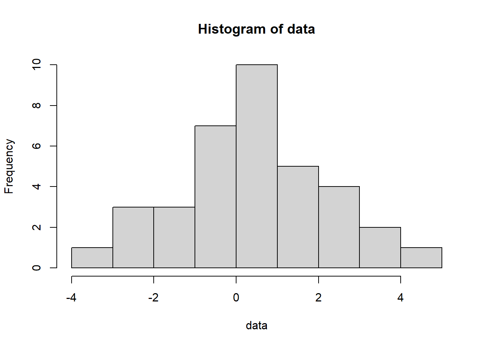
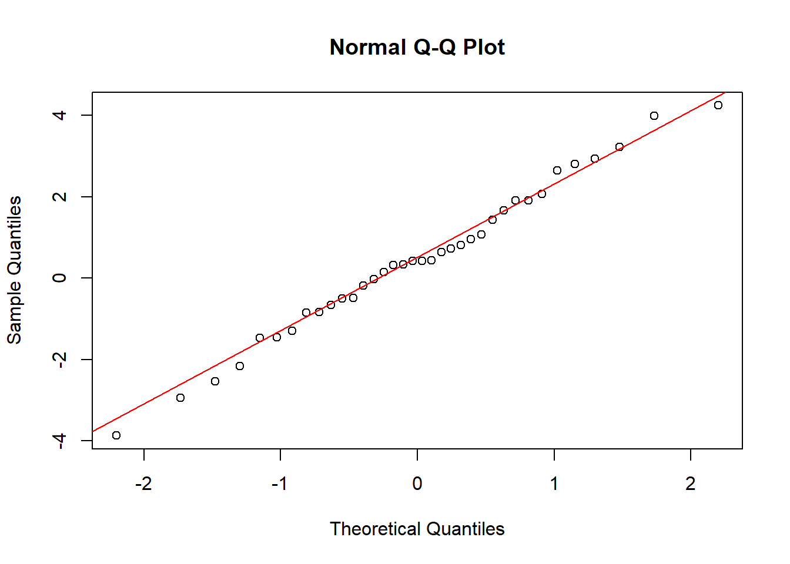
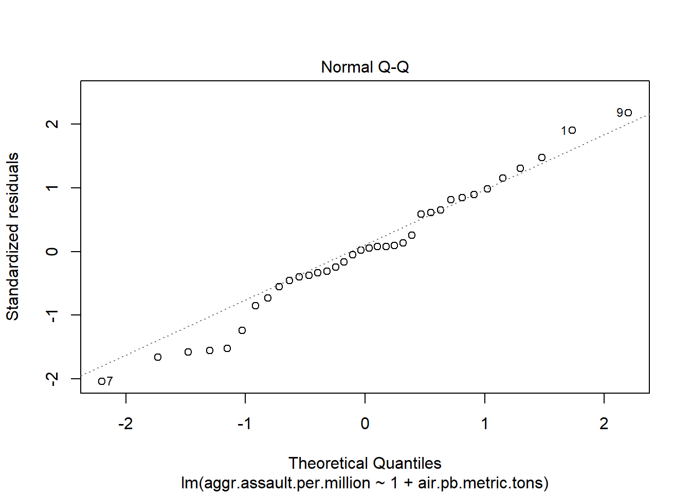

x <- seq(-2,8,0.1)
beta0 <- -2;
beta1 <- 1;
y <- beta0 + beta1 * x;
plot(x,y)
abline(h=0);
abline(v=0);
In these notes, we will introduce the task of prediction and begin talking about some of the fundamental tools for performing prediction, focusing on linear regression. The task of prediction will be a theme for much of the remainder of the course, and it is not an exaggeration to say that prediction is the fundamental task that lies at the heart of machine learning. Tasks like image classification (e.g., “does this image contain a cat or not?”) are very naturally cast as prediction problems, as are many of the most basic problems in machine learning (e.g., predict how likely a person is to engage with the next piece of content in their feed).
After this lesson, you will be able to
In a prediction problem, we are given data pairs \((X_1, Y_1), (X_2, Y_2), \dots, (X_n, Y_n)\) and we want to use \(X_i\) to predict \(Y_i\).
We call the \(X_i\) values the predictors (also called the independent variables), and we call our \(Y_i\) values the responses (or the dependent variables or the outcomes).
Let’s look at an example that we discussed in our very first lecture.

Here, our \((X_i,Y_i)\) pairs correspond to years of education (\(X_i\)) and income (\(Y_i\)). That is, our predictors are years of education, and our responses are income.
Our goal is to use this data to learn a function that maps years of education to income. That is, we want a function that takes years of education as input and outputs a prediction as to how much income we predict for a person with that income.
Now, the very first problem we run into is what we mean by learning a function– there are lots of functions out there!
Linear regression makes a particular choice: we will learn a linear function that maps our predictors to (predicted) responses.
You discussed this problem at some length in STAT240, in the setting where our \(X_i\) and \(Y_i\) variables were all real-valued. That is, you learned about simple linear regression, in which we model our data as \[ Y_i = \beta_0 + \beta_1 X_i + \epsilon_i, \]
where \(\beta_0\) is the intercept term, \(\beta_1\) is the coefficient associated with our predictors, and \(\epsilon_i\) is an error term.
One way to think of this is that we imagine that given a value for the predictor \(X_i\), say \(X_i = x_i\), the “true” value of \(Y_i\) would be \(\beta_0 + \beta_1 x_i\). However, we don’t see this quantity exactly. Instead, due either to uncertainty in our data collection or to random factors (or both), we see a noisy version of this quantity, namely \(Y_i = \beta_0 + \beta_1 x_i + \epsilon_i\).
Example: income and education
We might predict that a person with \(X_i\) years of education makes \[ Y_i = 20 + 4 X_i \] thousands of dollars in salary. But there are lots of other factors in addition to years of education that might influence how much money someone makes. Including the error \(\epsilon_i\) is a way to account for these unmeasured variables.
Example: astronomy
In the early days of astronomy, scientists like Johannes Kepler and Tycho Brahe were trying to fit the trajectories of planets in the sky to curves. When an astronomer takes a measurement of where a planet is, there are many sources of noise that cause them to make the measurement imprecisely. These sources of noise include both human error (e.g., imprecision in positioning the telescope, misreading a sight) and external sources (e.g., variations in humidity in the atmosphere change the way light bends as it reaches the observer’s eye). If we model the position of a planet at time \(X_i\) as \[ Y_i = \beta_0 + \beta_1 X_i \] for some choice of coefficients \(\beta_0\) and \(\beta_1\), we might account for these sources of measurement error via our error term \(\epsilon_i\). Of course, this linear model is incorrect– the planets follow quite complicated trajectories in the night sky, not simple straight lines. We’ll come back to the matter of when linear models are or are not appropriate.
To recap, a simple linear model has an outcome \(y\) and single predictor \(x\). It is defined by the following equation:
\[ \begin{aligned} y_i &= \beta_0 + \beta_1 x_i + \epsilon_i \\ &= ~~~~~~~\hat{y}_i ~~~~~~ + \epsilon_i \end{aligned} \]
where \(i = 1,2, \dots, n\), and the error terms \(\epsilon_i \sim N(0,\sigma^2)\) are independent over \(i=1,2,\dots,n\). The \(\hat{y}_i\) notation is to stress that once we have chosen values for the coefficients \(\beta_0\) and \(\beta_1\), our prediction of the response of the \(i\)-th data point is \(\hat{y}_i = \beta_0 + \beta_1 x_i\).
This equation represents our model, not the truth! We want to choose \(\beta_0\) and \(\beta_1\) so that this model describes our observed data as well as possible, but we have to bear in mind that this linearity assumption, that \(y_i\) is (exactly or approximately) expressible as \(\beta_0 + \beta_1 x_i\), is an assumption. Our model will be good at predicting outcomes only in so far as this model agrees with reality.
The subscript \(i\) in our regression equation indexes the \(n\) observations in the dataset. Think of \(i\) as a row number. So another way to think about our model \[ y_i = \beta_0 + \beta_1 x_i + \epsilon_i, \]
is as a system of \(n\) equations, \[ \begin{aligned} y_1 &= \beta_0 + \beta_1 x_1 + \epsilon_1 \\ y_2 &= \beta_0 + \beta_1 x_2 + \epsilon_2 \\ &\vdots \\ y_i &= \beta_0 + \beta_1 x_i + \epsilon_i \\ &\vdots \\ y_{n-1} &= \beta_0 + \beta_1 x_{n-1} + \epsilon_{n-1} \\ y_{n} &= \beta_0 + \beta_1 x_{n} + \epsilon_{n}. \end{aligned} \]
The error terms \(\epsilon_i\) in a linear model correspond, essentially, to the part of the variation in the data that remains unexplained by the deterministic portion of the model (encoded in the linear function \(\beta_0 + \beta_1 x\)).
One of the key assumptions of a linear model is that the residuals are independent and have mean zero, \(\mathbb{E} \epsilon_i = 0\). Most typically, we further assume that they are normally distributed with mean \(0\) and variance \(\sigma^2\). We’ll do that here in these notes, but this choice can sometimes be “relaxed”, in the sense that we may not need to assume that the errors are normal for linear regression to work, depending on what we want to do downstream. Later in your studies, when you take your mathematical statistics course, you’ll put that statement on firmer ground; for now, we’ll have to leave it vague.)
So let’s suppose that we’re using the linear model \[ Y_i = \beta_0 + \beta_1 X_i + \epsilon_i. \]
To simplify things, let’s just ignore the error term for a moment. After all, \(\epsilon_i\) just captures uncertainty in our measurements. In the ideal world of no measurement error, our model predicts that for a particular choice of predictor \(x\), we will measure the response \[ y = \beta_0 + \beta_1 x. \]
Now, let’s first consider what happens when \(x=0\). Then \(y=\beta_0\). Said another way, if we plotted the line \(y = \beta_0 + \beta_1 x\), \(\beta_0\) would be the intercept of our model.
For example, here’s the function with \(\beta_0 = -2\) and \(\beta_1 = 1.\)
x <- seq(-2,8,0.1)
beta0 <- -2;
beta1 <- 1;
y <- beta0 + beta1 * x;
plot(x,y)
abline(h=0);
abline(v=0);
Equivalently, since we know that this function forms a line:
# Pass NULL to plot to create an empty plot with axes.
plot(NULL, xlab="", ylab="", xlim=c(-2, 8), ylim=c(-4, 6))
abline(a=-2, b=1, col='red', lw=3);
abline(h=0);
abline(v=0);
Looking at those two plots, it’s clear that \(\beta_0 = -2\) is indeed the intercept of our function. But to reiterate, the “typical” interpretation of the parameter \(\beta_0\) is as describing what would happen if we observed a data point for which our predictor \(x\) were equal to zero.
Now, it’s pretty obvious that \(\beta_1\) is the slope of our function. But how do we interpret it? Well, let’s suppose that we take one measurement with predictor \(x\). Our model says that (again, ignoring the error term for now) we will see a response \[ y = \beta_0 + \beta_1 x. \]
Now, let’s suppose we take another measurement, this time at predictor value \(x+1\). Our model predicts that we will measure the response \[ y' = \beta_0 + \beta_1 (x+1). \]
If we subtract one from the other, we have \[ y' - y = \beta_0 + \beta_1 (x+1) - (\beta_0 + \beta_1 x) = \beta_1. \]
In other words, \(\beta_1\) is the change in response that our model predicts if we increase the value of our predictor by one unit.
Example: income and education
Let’s come back to our model predicting income (in tens of thousands of dollars) from education, and suppose that we have fit a model of the form \[ y = 20 + 4 x. \]
So our coefficients are \(\beta_0 = 20\) and \(\beta_1 = 4\). Thus, our model predicts that an increase in education by \(1\) year is associated with in an increase of $40K in salary (4 times our unit of measurement, $10K/year).
Similarly, since \(\beta_0=20\), our model “predicts” that a person with zero years of education will receive a salary of $20K per year.
Example: a cautionary tale
Interpreting the intercept as describing the response at \(x=0\) can get a little bit weird if we push the idea too far. Let’s consider a similar problem, this time of predicting income from height. Suppose that we fit a model that predicts income (in thousands of dollars) from height (in centimeters), \[ y = 10 + 0.4 x, \]
where \(x\) is height in centimeters (note that the units on this example don’t really make sense– don’t let that bother you; it’s not the point).
The intercept of this model is \(\beta_0 = 10\). So our model “predicts” that a person with height \(x=0\) would make a salary of $10,000 per year. Now, that’s all fine and good, except that I, for one, have never encountered a person with height 0 cm.
So our model makes a prediction, but it is making a prediction on an input that we don’t really every expect to encounter in the real word.
The high-level point is that often our linear regression model really only makes sense over a certain range of values, and we should be careful when using our model to extrapolate to “strange” values of \(x\).
Even though we might be able to associate a response with any particular input \(x\), that doesn’t mean that every such input is realistic. These matters will mostly have to wait for later courses on modeling, but it’s a point we’ll come back to a couple of times over the next few weeks, and it’s a common pitfall in interpreting linear regression models, so it’s worth bringing it to your attention now.
It is always tempting in talking about models like this to say, having fit a model, that “increasing the value of the predictor by one unit causes an increase in the response by one unit” or that “increasing the predicor by one unit results in an increase of such and such amount”. Indeed, many statisticians will say something like this when speaking informally. Still, we should be careful to avoid giving a causal interpretation to our findings.
For example, suppose that we fit a linear regression model to predict the number of cancer cases per year in Wisconsin based on pollution levels (measured in, say, PM2.5), and we estimate \(\beta_1 = 10.2\). We might be tempted to say that a unit increase of PM2.5 causes, on average*, an additional 10.2 cancer cases.
For better or worse, this is a stronger statement than what we can conclude from a linear model fitted in this way. We can only say that a unit increase in PM2.5 is associated with an increase of 10.2 cancer cases. This is the old “correlation is not causation” saying, wearing a slightly different hat.
There is a whole area in statistics called causal inference that attempts to use statistics to make causal statements, but it is, unfortunately, outside the scope of the course.
Suppose that we have chosen values of our coefficients \(\beta_0\) and \(\beta_1\) in our regression model. How do we decide how “good” or “bad” this choice of coefficients is? We need a function that takes a particular choice of \(\beta_0\) and \(\beta_1\) and outputs a number that measures how well or poorly the resulting model describes our data.
In the setting where larger values of this function correspond to worse model fit, we call this kind of a function a loss function: it takes a choice of model parameters (i.e., coefficients \(\beta_0\) and \(\beta_1\), in our case), and outputs a number that measures how poorly our model fits the data.
There are lots of functions we could choose to use as our loss function, but by far the most common choice is the residual sum of squares (RSS), sometimes called the sum of squared errors (SSE): \[ \ell( \beta_0, \beta_1 ) = \sum_{i=1}^n (y_i - \hat{y}_i)^2 = \sum_{i=1}^n (y_i - (\beta_0 + \beta_1x_i))^2. \]
The terms \(y_i - \hat{y}_i = y_i - (\beta_0 + \beta_1x_i)\) are called the residuals. The word residual comes from the word residue (cue flashback to chem lab?), which refers to something that is left over. The residuals are what is left over after we try to predict the responses from the predictors \(x_1,x_2,\dots,x_n\).
Our goal is then to choose our coefficients \(\beta_0\) and \(\beta_1\) to minimize the sum of squared residuals loss in the equation above. We call this ordinary least squares (OLS) regression. “Least squares” because, well, we’re minimizing the sum of squares. “Ordinary” because there are other sums of squares we could look at that would be a little less ordinary (see here for details, if you’re curious).
Let’s note that the sum of squared errors is not the only possible loss we could choose. For example, we might try to minimize the sum of absolute deviations, \[ \sum_{i=1}^n |y_i - \hat{y}_i| = \sum_{i=1}^n \left|y_i - (\beta_0 + \beta_1x_i) \right|. \]
As we’ve seen in recent lectures, though, trying to minimize this loss with respect to our coefficients \(\beta_0\) and \(\beta_1\) can be challenging.
So we have a loss function \[ \ell(\beta_0,\beta_1) = \sum_{i=1}^n (y_i - (\beta_0 + \beta_1x_i))^2, \] and we want to choose \(\beta_0\) and \(\beta_1\) to minimize this quantity.
To do that, we are going to dust off our calculus textbooks, take derivatives, set those derivatives equal to zero, and solve for \(\beta_0\) and \(\beta_1\). That is, we want to solve \[ \frac{ \partial \ell( \beta_0, \beta_1 )}{ \partial \beta_0 } = 0 ~~~\text{ and } ~~~ \frac{ \partial \ell( \beta_0, \beta_1 ) }{ \partial \beta_1 } = 0. \]
I’ll spare you the mathematical details; if you’re curious, you can find a derivation of the solution in any introductory regression book, or here
The important point is that we find that our estimates should be \[ \begin{aligned} \hat{\beta}_0 &= \bar{y} - \hat{\beta}_1 \bar{x} \\ \hat{\beta}_1 &= \frac{ \sum_{i=1}^n (x_i - \bar{x})(y_i - \bar{y}) } { \sum_{i=1}^n (x_i - \bar{x})^2 }, \end{aligned} \]
where \(\bar{x}\) and \(\bar{y}\) are the means of the predictors and responses, respectively: \[ \bar{x} = \frac{1}{n} \sum_{i=1}^n x_i ~~~\text{ and }~~~ \bar{y} = \frac{1}{n} \sum_{i=1}^n y_i. \]
Let’s pause and try to interpret what these two estimates \(\hat{\beta}_0\) and \(\hat{\beta}_1\) actually mean. Let’s start with \(\hat{\beta}_1\).
By our definition of \(\hat{\beta}_1\), we have
\[ \hat{\beta}_1 = \frac{ \sum_{i=1}^n (x_i - \bar{x})(y_i - \bar{y}) } { \sum_{i=1}^n (x_i - \bar{x})^2 } = \frac{ \frac{1}{n} \sum_{i=1}^n (x_i - \bar{x})(y_i - \bar{y}) } { \frac{1}{n} \sum_{i=1}^n (x_i - \bar{x})^2 }, \] where we multiplied the numerator and denominator by \(1/n\).
Now, let’s notice that the denominator is just the (uncorrected) sample variance of the predictors: \[ s_x^2 = \frac{1}{n} \sum_{i=1}^n (x_i - \bar{x})^2. \] If we define the analogous quantity for the predictors, \[ s_y^2 = \frac{1}{n} \sum_{i=1}^n (y_i - \bar{y})^2, \] we have \[ \hat{\beta}_1 = \frac{ \frac{1}{n} \sum_{i=1}^n (x_i - \bar{x})(y_i - \bar{y}) } {s_x^2} = \frac{ s_y }{ s_x } \frac{ \frac{1}{n} \sum_{i=1}^n (x_i - \bar{x})(y_i - \bar{y}) } { s_x s_x }. \]
Now, let’s look at the other sum, \[ \sum_{i=1}^n (x_i - \bar{x})(y_i - \bar{y}), \] and notice that it is the sample covariance of the predictors and responses. Recalling our definition of the correlation as \[ \rho_{x,y} = \frac{ \mathbb{E} (X - \mathbb{E} X)( Y - \mathbb{E}Y)} {\sqrt{ (\operatorname{Var} X)( \operatorname{Var} Y) }}, \]
we notice that \[ \hat{\rho}_{x,y} = \frac{ \frac{1}{n} \sum_{i=1}^n (x_i - \bar{x})(y_i - \bar{y}) } { s_x s_x } = \frac{ \frac{1}{n} \sum_{i=1}^n (x_i - \bar{x})(y_i - \bar{y}) } { \sqrt{ s_x^2 s_y^2 }} \]
is the sample correlation between our predictors and responses– we plugged in the sample versions of the covariance and the variances.
So, our estimated coefficient \(\hat{\beta}_1\) can be expressed as \[ \hat{\beta}_1 = \frac{ s_y }{ s_x } \hat{\rho}_{x,y}. \]
In other words, the slope of our model is the ratio of the standard deviations, scaled by the correlation between our predictors and responses.
An interesting case to think about is when the predictors and responses are perfectly correlated (i.e., the predictors and responses form a perfect line, with no “jitter”). Then our estimated slope is \(\hat{\beta}_1 = \sqrt{ s_y^2/s_x^2 } = s_y/s_x\). In other words, the slope of our model is just the ratio of the standard deviation of the responses to that of the predictors. Think of this as like a “change of units” from predictors to responses. If our predictors are measured in, say, years of education, and our responses are measured in dollars per year, then the ratio of the standard deviations has units \[ \frac{ \text{dollars per year} }{ \text{years of education}}, \]
and multiplying this by our predictor, which is measured in “years of education”, we get \[ \text{ response } = \frac{ \text{dollars per year} }{ \text{years of education}} \cdot \text{ years of education } = \text{ dollars per year }, \] which is what we expect.
This kind of “dimension analysis”, which you may have seen before in physics, can be a useful way to make sure that you’re performing calculations correctly!
Turning our attention to \(\hat{\beta}_0\), we have
\[ \hat{\beta}_0 = \bar{y} - \hat{\beta}_1 \bar{x}. \] Why does this choice make sense?
Well, let’s suppose that we decided to make our lives even harder by restricting our choice of prediction function to be a constant. That is, suppose we wanted to choose a prediction function that returns the same output, say, \(\hat{y}\), no matter the input \(x\).
If we wanted to choose this output using the same least-squares approach that we used above, we would want to choose \(\hat{y}\) so that it minimizes \[ \sum_{i=1}^n (y_i - y)^2. \] A little bit of calculus (seriously, this one’s easy– try it!) shows that the way to minimize this is to choose the output \[ \hat{y}= \frac{1}{n} \sum_{i=1}^n y_i = \bar{y}. \] Now, thankfully, we are not actually trying to predict our data with a constant function. We are allowed to choose a slope!
Having chosen our slope \(\hat{\beta}_1\), our model without an intercept term predicts that the \(i\)-th observation should have response \(\hat{\beta}_1 x_i\). If we add an intercept term to the model, sticking with our least squares loss, we would like to choose \(\beta_0\) so as to minimize \[ \sum_{i=1}^n \left( y_i - \hat{\beta}_1 x_i - \beta_0 \right)^2. \]
The exact same kind of calculus argument (taking a derivative with respect to \(\beta_0\), this time– again, give it a try!), gets us \[ \hat{\beta}_0 = \bar{y} - \hat{\beta}_1 \bar{x}. \]
After fitting, we can find our predicted \(\hat{y_i}\), i.e. the \(y\) values on the line.
\[ \hat{y_i}=\hat{\beta_0}+\hat{\beta_1}x_i \]
as well as our model residuals \(\hat{\epsilon}_i\)
\[ \hat{\epsilon_i}=y_i-\hat{y_i} \]
From this, we also get for free an estimate of the variance of the residuals \(\sigma^2\), which happens to be very useful in computing other statistics. The reason is that the larger the residuals’ variance, the less precisely we can estimate our regression coefficients, which should make a lot of sense.
\[ \hat{\sigma}^2=\text{mean squared error}=\frac{SSE}{n-2}=\frac1{n-2}\sum_i(y_i-\hat{y_i})^2 \]
We can also easily derive the variance of the slope. First, observe that
\[\begin{align} \sum_i (x_i - \bar{x})\bar{y} &= \bar{y}\sum_i (x_i - \bar{x})\\ &= \bar{y}\left(\left(\sum_i x_i\right) - n\bar{x}\right)\\ &= \bar{y}\left(n\bar{x} - n\bar{x}\right)\\ &= 0 \end{align}\]
This means that
\[\begin{align} \sum_i (x_i - \bar{x})(y_i - \bar{y}) &= \sum_i (x_i - \bar{x})y_i - \sum_i (x_i - \bar{x})\bar{y}\\ &= \sum_i (x_i - \bar{x})y_i\\ &= \sum_i (x_i - \bar{x})(\beta_0 + \beta_1x_i + \epsilon_i )\\ \end{align}\]
Using this, we can easily derive \(\text{Var}(\hat{\beta_1})\) as follows:
\[\begin{align} \text{Var}(\hat{\beta_1}) & = \text{Var} \left(\frac{\sum_i (x_i - \bar{x})(y_i - \bar{y})}{\sum_i (x_i - \bar{x})^2} \right) \\ &= \text{Var} \left(\frac{\sum_i (x_i - \bar{x})(\beta_0 + \beta_1x_i + \epsilon_i )}{\sum_i (x_i - \bar{x})^2} \right), \;\;\;\text{substituting in the above} \\ &= \text{Var} \left(\frac{\sum_i (x_i - \bar{x})\epsilon_i}{\sum_i (x_i - \bar{x})^2} \right), \;\;\;\text{noting only $\epsilon_i$ is a random variable} \\ &= \frac{\sum_i (x_i - \bar{x})^2\text{Var}(\epsilon_i)}{\left(\sum_i (x_i - \bar{x})^2\right)^2} , \;\;\;\text{independence of } \epsilon_i \text{ and, Var}(cX)=c^2\text{Var}(X) \\ &= \frac{\sigma^2}{\sum_i (x_i - \bar{x})^2} \\ \end{align}\]
Okay, that’s enough abstraction. Let’s apply this to some real data and see how things go.
In the 1920s, Thomas Midgley Jr. discovered that adding tetraethyllead to gasoline decreased engine knocking (i.e., when fuel doesn’t fully ignite in an engine cylinder, which may damage the engine). He won the 1923 Nichols medal, a prestigious prize in chemistry, for his discovery.
The result of burning tetraethyllead in gasoline resulted in high levels of lead in the atmostphere. By the 1950s to 70s, researchers started to suspect that increased lead levels in the atmosphere was causing widespread lead poisoning, with symptoms ranging from depression, loss of appetite, and amnesia to anemia, insomnia, slurred speech, and cognitive impairment. Starting in the 1980s, the use of tetraethyllead in gasoline started to be phased out. At most gas stations in the United States, you’ll notice that gasoline is still marked as being “unleaded”, just in case you were worried!
In more recent years, a more controversial theory has emerged, suggesting that exposure to lead (be it in the atmosphere or in paint in older buildings) correlates with incidents of violent crime later in life 1 2. This study was first conducted in the US, but it was soon replicated in other countries and the similar results have been found elsewhere in the world.


Let’s look at a dataset that contains atmospheric lead content levels and aggravated assault rates for several cities in the US and see if we can build a simple linear regression model to explain the trend and make predictions.
lead <- read.csv('data/lead.csv')
# First things first: let's look at the data.
head(lead) city air.pb.metric.tons aggr.assault.per.million
1 Atlanta 421 1029
2 Atlanta 429 937
3 Atlanta 444 887
4 Atlanta 457 533
5 Atlanta 461 1012
6 Atlanta 454 848The variables we are interested in are lead levels in the atmosphere (measured in metric tons of lead emitted) and the aggravated assault rate per million 22 years later. We want to predict the assault rate from lead levels, so our predictor (or explanatory variable or independent variable, if you prefer) is lead levels, and our response (or dependent variable) is the assault rate. This data is available for a number of cities:
levels( as.factor(lead$city) )[1] "Atlanta" "Chicago" "Indianapolis" "Minneapolis" "New Orleans"
[6] "San Diego" For simplicity, let’s focus on the city of Atlanta.
atlanta_lead <- lead[ lead$city=='Atlanta', ];
## Alternative approach, using filter in dplyr:
# library(dplyr)
# atlanta_lead lead %>% filter(city == "Atlanta")
# Plot the data to get a look at what's going on.
library(ggplot2)
pp <- ggplot( atlanta_lead,
aes(x=air.pb.metric.tons, y=aggr.assault.per.million));
pp <- pp + geom_point();
pp <- pp + labs( x="Lead levels (metric tons)",
y="Agg'd assaults (per million)",
title="Violent crime and atmospheric lead (22 year lag)" )
pp
Visually, it’s quite clear that assaults are well-predicted as a linear function of lead levels. One thing that is already perhaps of concern is that the data appears to be a bit more “spread out” in the vertical direction for lower lead levels. This is a bit concerning in light of our assumption that the error terms were all distributed according to a normal with mean \(0\) and variance \(\sigma^2\). We’ll come back to this point below. For now, let’s press on.
To fit a linear model in R, we use the lm() function (lm for “linear model”). The syntax is as simple as lm(y ~ 1 + x, data=dframe), where dframe is the data frame containing our data, and y ~ 1 + x means to regress the variable y (i.e., the column y in the dataframe dframe) against the variable x and an intercept term (that’s the 1 in the model formula): \[
y = \beta_1 x + \beta_0
\]
Note that the 1 in the model formula y ~ 1 + x is completely optional– R will include an intercept term automatically. Still, I recommend including it for the sake of clarity.
The function lm returns an object of the class lm. This is an object that contains a bunch of information about our fitted model. We’ll see some of that information below.
So in our case, we want to regress aggr.assault.per.million against air.pb.metric.tons. That is, we want a model like \[
\text{agg.assault} = \beta_0 + \beta_1 \cdot \text{air.pb}
\]
So we’ll write that as aggr.assault.per.million ~ 1+ air.pb.metric.tons. Let’s try fitting the model and then we’ll ask R to summarize our model. Running summary() on the model object gives us a variety of useful summary statistics and other information about the fitted model.
atlanta_lead_lm <- lm(aggr.assault.per.million ~ 1 + air.pb.metric.tons,
data=atlanta_lead)
summary(atlanta_lead_lm)
Call:
lm(formula = aggr.assault.per.million ~ 1 + air.pb.metric.tons,
data = atlanta_lead)
Residuals:
Min 1Q Median 3Q Max
-356.36 -84.55 6.89 122.93 382.88
Coefficients:
Estimate Std. Error t value Pr(>|t|)
(Intercept) 107.94276 80.46409 1.342 0.189
air.pb.metric.tons 1.40375 0.08112 17.305 <2e-16 ***
---
Signif. codes: 0 '***' 0.001 '**' 0.01 '*' 0.05 '.' 0.1 ' ' 1
Residual standard error: 180.6 on 34 degrees of freedom
Multiple R-squared: 0.898, Adjusted R-squared: 0.895
F-statistic: 299.4 on 1 and 34 DF, p-value: < 2.2e-16We’ll come back a little later to talk about some of these numbers in more detail. For now, let’s notice in particular that we have estimated coefficients, accessible in the coefficients attribute of our model object:
atlanta_lead_lm$coefficients (Intercept) air.pb.metric.tons
107.942757 1.403746 So our model predicts that in Atlanta, an increase of one metric ton of lead in the atmosphere is associated with an increase of about 1.4 aggravated assaults per million people. Similarly, the intercept indicates that our model predicts that in the absence of any lead in the atmosphere, there would be about 108 aggravated assaults per million people.
lm() output: diagnosticsLet’s look at how our fitted model tracks the data by overlaying the fitted line on our scatterplot above. One way to do this would be to use abline with the entries of atlanta_lead_lm$coefficients to specify the slope and intercept, but lm is so common that ggplot2 has this same basic functionality built-in, in the form of geom_smooth().
pp <- ggplot( atlanta_lead,
aes(x=air.pb.metric.tons,y=aggr.assault.per.million));
# The argument `se` specifies whether or not to include a
# confidence interval around the plotted line.
# We'll talk about that later.
# For now we'll just suppress the CI with se=FALSE
pp <- pp +geom_point() + geom_smooth(method="lm",
formula="y~x",
se=FALSE);
pp <- pp + labs( x="Lead levels (metric tons)",
y="Agg'd assaults (per million)",
title="Violent crime and atmospheric lead (22 year lag)" )
pp
Looks like a pretty good fit! Let’s look at some of the other information included in the output of lm().
# gets fitted y-values (i.e., points on line of best fit)
fitted(atlanta_lead_lm) 1 2 3 4 5 6 7 8
698.9200 710.1499 731.2061 749.4548 755.0698 745.2436 787.3560 836.4871
9 10 11 12 13 14 15 16
849.1208 990.8992 1038.6266 1096.1802 1118.6401 1169.1750 1183.2125 1187.4237
17 18 19 20 21 22 23 24
1194.4424 1197.2499 1302.5309 1351.6620 1414.8306 1529.9378 1597.3176 1689.9649
25 26 27 28 29 30 31 32
1757.3447 1782.6122 1852.7995 1879.4707 1991.7704 2000.1929 2101.2626 2185.4874
33 34 35 36
2209.3511 2231.8110 2217.7735 2236.0222 # residuals( model ) gets residuals (the difference between the
# observed response y and the response predicted by our model)
residuals(atlanta_lead_lm) # We can also use resid() 1 2 3 4 5 6
330.080025 226.850054 155.793859 -216.454844 256.930171 102.756395
7 8 9 10 11 12
-356.355996 -149.487118 382.879164 -273.899218 -268.626594 -280.180195
13 14 15 16 17 18
175.359863 -294.175006 23.787530 109.576291 -97.442440 -80.249933
19 20 21 22 23 24
-8.530910 45.337967 -43.830619 116.062179 -55.317646 -70.964906
25 26 27 28 29 30
-129.344731 14.387834 -58.799484 143.529335 148.229626 9.807148
31 32 33 34 35 36
199.737410 -64.487372 16.648940 14.188998 -27.773538 3.977759 These residuals reflect the error between our model’s prediction and the true observations, and they are often quite informative.
Recall that our model assumes that the observation errors \(\epsilon_i\) are normally distributed about zero, with a shared variance \(\sigma^2\). To check that this assumption is (approximately) true, we can plot the residuals:
resids <- residuals(atlanta_lead_lm)
hist(resids)
That looks… okay, at any rate. The residuals are (approximately) symmetric about zero, and the histogram looks normal-ish to me. We’ll come back to this point, and later in your studies (e.g., if you take our department’s regression course) you’ll learn lots of ways for assessing model fit (e.g., checking if the normal errors assumption is correct), but for the time being, we’ll be satisfied with the “ocular inspection” method.
Another important point, far more important that the normality assumption, is that the variance of the errors \(\epsilon_i\) does not depend on the predictor \(X_i\). This is referred to as “homogeneity of variance”, more commonly called homoscedasticity. Its absence, heteroscedasticity, wherein the variance of the error terms varies with \(X_i\), can be a big problem for linear regression.
So let’s check for it, just visually for now. We want to plot the residuals as a function of their predictor values. If our errors are homoscedastic, we should observe the variance of the residuals about the horizontal line \(y=0\) to be more or less constant along the x-axis. R will do this for us automatically if we call plot on our model object. In fact, R will make several plots for us automatically, and return those plots in a list-like object. The residuals as a function of the x values is the first of these, and we can access it with the which keyword to plot().
plot(atlanta_lead_lm, which=1)
The red line is fitted by R; if our residuals are reasonably well-behaved, this line should be horizontal. Inspecting this plot, it looks as we suspected– the residuals for smaller lead atmospheric levels have slightly higher variance, and tend to be biased toward positive values. Still (and this is an intuition that you’ll develop as you perform more analyses), this doesn’t look especially extreme.
The stronger assumption, not required by linear regression per se, but a good assumption to check for use in downstream testing procedures (we’ll talk about that soon!), is that the errors are normal with mean zero. We saw that their histogram above looked pretty reasonable. A better check for fit is to construct a Q-Q plot (still no relation to the Chinese restaurant on University Ave, sadly).
plot(atlanta_lead_lm, which=2)
Let’s recall that a Q-Q-plot displays the quantiles (i.e., the percentiles) of our observed data against the quantiles of the normal distribution. If our data were perfectly normally distributed, then the Q-Q plot would look like a straight line with slope 1 (up to randomness in the data, of course). If our data is not normal, the Q-Q plot will look far different.
Just to see an example of this, let’s generate some data from a t-distribution (which looks normal, but has “heavier tails”), and look at the Q-Q plot.
data <- rt(n=36, df=3, ncp=0);
hist(data)
qqnorm(data);
# Add a line to the plot to indicate the behavior we would
# expect to see if the data were normal.
qqline(data, col='red');
So this is an example of the kind of behavior we would expect to see if our data were not well-described by a normal. Here’s our lead level data again.
# We could also call qqnorm(atlanta_lead_lm$residuals)
plot(atlanta_lead_lm, which=2)
There are some slightly concerning spots there, especially in the bottom-left, but it’s not too extreme (in my opinion, anyway). Once again, later on you’ll learn more rigorous ways of checking model assumptions like this. We’re just trying to get an intuition for now.
So we’ve established that our model is a reasonably good fit for the lead data, at least in the sense that the trend in the data follows our plotted line and such.
Can we conclude from this that the association between lead and aggravated assault rate is “real”? It’s possible, after all, that the observed association is merely due to chance.
Well, in our discussions of hypothesis testing we saw a number of tools for checking if observations were merely due to chance or not. Linear regression has its own set of tools for checking whether observed coefficient estimates are “merely due to chance”.
Let’s look back at our model summary and let’s pay particular attention to the “coefficients” part of the output.
summary(atlanta_lead_lm)
Call:
lm(formula = aggr.assault.per.million ~ 1 + air.pb.metric.tons,
data = atlanta_lead)
Residuals:
Min 1Q Median 3Q Max
-356.36 -84.55 6.89 122.93 382.88
Coefficients:
Estimate Std. Error t value Pr(>|t|)
(Intercept) 107.94276 80.46409 1.342 0.189
air.pb.metric.tons 1.40375 0.08112 17.305 <2e-16 ***
---
Signif. codes: 0 '***' 0.001 '**' 0.01 '*' 0.05 '.' 0.1 ' ' 1
Residual standard error: 180.6 on 34 degrees of freedom
Multiple R-squared: 0.898, Adjusted R-squared: 0.895
F-statistic: 299.4 on 1 and 34 DF, p-value: < 2.2e-16The Coefficients table includes our estimates for the coefficients, standard errors for those estimates, t-values (i.e., a test statistic) for those statistics and, at the far right of the table, a column headed Pr[>|t|]. Hey… that’s a p-value!
Notice that in this case, the p-value associated to our estimate of the coefficient of lead levels is quite small. That indicates that an estimate this extreme (or more extreme) is highly unlikely to have arisen entirely by chance.
Now, it is in dealing with these p-values that we need to be a bit careful about our model assumptions. If the assumption of normal, homoscedastic errors is violated, things can go wrong with these p-values. But since our Q-Q plot indicated that our residuals were reasonably normal-looking, we can be somewhat confident that this is reflecting a real effect (well, and it’s pretty clear just from the plot that there’s a linear relationship…).
This p-value arises, in essence, from a \(t\)-test. This t-test is designed to test the null hypothesis \[ H_0 : \beta_1 = 0. \]
In this case, our p-value associated with \(\beta_1\) is quite small, indicating a correlation between lead levels and aggravated assault levels. It does not imply causation, though, as you well know by now. Nonetheless, this seems to be fairly convincing evidence that there is an association.
Thinking back to our brief discussion of the connection between confidence intervals and testing, you won’t be surprised to learn that we can also compute confidence intervals for the true value of the coefficients.
confint(atlanta_lead_lm, level=0.95) 2.5 % 97.5 %
(Intercept) -55.579958 271.465472
air.pb.metric.tons 1.238891 1.568602Of course, we also tested the hypothesis \(H_0 : \beta_0 = 0\), and the p-value is not especially small (also reflected in the fact that the confidence interval includes \(0\)). This indicates that our intercept term was not statistically significantly different from zero.
Note, however, that just because our p-value associated to the intercept term isn’t especially small, that doesn’t mean that the intercept isn’t useful for prediction. Let’s turn our attention to that matter.
Suppose that tomorrow a chemical company near Atlanta has an incident, and lead is released into the atmosphere. Suppose that the new atmospheric levels of lead are found to be 1300 metric tons. What would you predict the approximate aggravated assault rate to be 22 years later?
Well, let’s start by just looking at a plot of our model again.
pp <- ggplot( atlanta_lead,
aes(x=air.pb.metric.tons,y=aggr.assault.per.million));
# The argument `se` specifies whether or not to include a
# confidence interval around the plotted line.
# We'll talk about that later.
# For now we'll just suppress the CI with se=FALSE
pp <- pp +geom_point() + geom_smooth(method="lm",
formula="y~x",
se=FALSE);
pp <- pp + labs( x="Lead levels (metric tons)",
y="Agg'd assaults (per million)",
title="Violent crime and atmospheric lead (22 year lag)" )
pp
Just looking at the plot, we see that at x-value 1300, our fitted line is just about exactly at 2000 aggravated assaults per million people.
Hopefully you can imagine how annoying it would be to perform this exercise by hand every time we need a new prediction. Luckily, R model objects (including linear regression) support a function called predict, which does exactly what it sounds like. We pass our model, and some data (i.e., x-values), and predict() outputs our model’s predicted responses at those values.
predict(atlanta_lead_lm, newdata=data.frame(air.pb.metric.tons=1300)) 1
1932.813 Suppose the company continues to release more lead into the atmosphere, and next year, the levels are measured to be 2000 metric tons. Can we use our model to predict what aggravated assault rates might look like 22 years later?
Well, looking at the plot again, 2000 metric tons is rather far outside the range of our observed predictor values.
pp <- ggplot( atlanta_lead,
aes(x=air.pb.metric.tons,y=aggr.assault.per.million));
# The argument `se` specifies whether or not to include a
# confidence interval around the plotted line.
# We'll talk about that later.
# For now we'll just suppress the CI with se=FALSE
pp <- pp +geom_point() + geom_smooth(method="lm",
formula="y~x",
se=FALSE);
pp <- pp + labs( x="Lead levels (metric tons)",
y="Agg'd assaults (per million)",
title="Violent crime and atmospheric lead (22 year lag)" )
pp
As we’ve alluded to earlier in these lecture notes, predictions made far outside the range of observed predictors have to be treated carefully They may be reliable, but they also may not. The reliability of a prediction usually decreases the further away it is from your data.
For example, perhaps once lead levels reach a certain point, there just isn’t much more damage they can do to human development. Then we would see the linear trend flatten out at higher lead levels. Our function would cease to be linear, and naively applying our linear models to those values would result in poor prediction performance.
Just to drive the point home, here’s a cautionary tale:

|t|)
(Intercept) 17.965050 0.849663 21.144 < 2e-16 disp -0.006622 0.004166 -1.590 0.12317
hp -0.022953 0.004603 -4.986 2.88e-05 wt 1.485283 0.429172 3.461 0.00175 ** — Signif. codes: 0 ‘’ 0.001 ’’ 0.01 ’’ 0.05 ‘.’ 0.1 ’ ’ 1
Residual standard error: 1.062 on 28 degrees of freedom Multiple R-squared: 0.6808, Adjusted R-squared: 0.6466 F-statistic: 19.91 on 3 and 28 DF, p-value: 4.134e-07
:::
:::
Once again, before we get too eager about interpreting the model, we should check that our residuals are reasonable.
::: {.cell}
```{.r .cell-code}
hist(mtc_model$residuals)
:::
Hmm… that isn’t amazing, but on the other hand, there aren’t very many observations to begin with, so we shouldn’t expect a particularly normal-looking histogram.
Checking heteroscedasticity isn’t so easy now, but we can still do things like compare the residuals with a normal via a Q-Q plot:
plot(mtc_model, which=2)
In my opinion, this Q-Q plot would likely lead me to question the assumption of normal errors. That doesn’t mean that we can’t proceed with using our linear model, but it will mean that we should be a bit careful with how much credence we give to any quantities that depend on our normality assumption (e.g., our p-values).
Let’s press on regardless, for now, mostly for the sake of demonstration of what we would do, if we were reasonably happy with our model assumptions. Still, we should bear in the back of our minds that perhaps our normality assumptions perhaps aren’t exactly true.
Let’s return to our model output.
summary(mtc_model)
Call:
lm(formula = qsec ~ 1 + disp + hp + wt, data = mtcars)
Residuals:
Min 1Q Median 3Q Max
-1.8121 -0.3125 -0.0245 0.3544 3.3693
Coefficients:
Estimate Std. Error t value Pr(>|t|)
(Intercept) 17.965050 0.849663 21.144 < 2e-16 ***
disp -0.006622 0.004166 -1.590 0.12317
hp -0.022953 0.004603 -4.986 2.88e-05 ***
wt 1.485283 0.429172 3.461 0.00175 **
---
Signif. codes: 0 '***' 0.001 '**' 0.01 '*' 0.05 '.' 0.1 ' ' 1
Residual standard error: 1.062 on 28 degrees of freedom
Multiple R-squared: 0.6808, Adjusted R-squared: 0.6466
F-statistic: 19.91 on 3 and 28 DF, p-value: 4.134e-07Let’s start at the bottom. The residual standard error (RSE) is listed as being 1.062. This is related to the sum of squared errors we discussed earlier, and it’s exactly what it sounds like– the standard error of the model’s residuals. Ideally, we want this number to be small– after all, it measures the error in our model. We’ll come back to this matter later in the semester.
The output lists this as being the residual standard error on 28 degrees of freedom. Remember that as a rule of thumb, the degrees of freedom will be the number of data points less the number of parameters we estimate. In this case, there are 32 data points
nrow(mtcars)[1] 32and our model has four parameters: the intercept and our three predictors’ coefficients, so 28 degrees of freedom checks out!
Much more on that whole matter soon, but let’s keep looking at that model summary.
summary(mtc_model)
Call:
lm(formula = qsec ~ 1 + disp + hp + wt, data = mtcars)
Residuals:
Min 1Q Median 3Q Max
-1.8121 -0.3125 -0.0245 0.3544 3.3693
Coefficients:
Estimate Std. Error t value Pr(>|t|)
(Intercept) 17.965050 0.849663 21.144 < 2e-16 ***
disp -0.006622 0.004166 -1.590 0.12317
hp -0.022953 0.004603 -4.986 2.88e-05 ***
wt 1.485283 0.429172 3.461 0.00175 **
---
Signif. codes: 0 '***' 0.001 '**' 0.01 '*' 0.05 '.' 0.1 ' ' 1
Residual standard error: 1.062 on 28 degrees of freedom
Multiple R-squared: 0.6808, Adjusted R-squared: 0.6466
F-statistic: 19.91 on 3 and 28 DF, p-value: 4.134e-07The F-statistic associated with our residuals has a very small p-value associated to it, indicating, in essence, that our model fit is much better than would be expected by chance. You’ll learn a lot more about the F-distribution when you learn about analysis of variance (ANOVA) in a later class.
Scanning our way up the model summary, let’s look at the table of coefficient estimates. We see that our intercept term and the coefficients for horsepower (hp) and weight (wt) are flagged as being significant. Thus, briefly putting on our testing hats, we would reject the null hypotheses \(H_0 : \beta_0=0\), \(H_0: \beta_{\text{hp}} = 0\) and \(H_0: \beta_{\text{wt}} = 0\). On the other hand, there is insufficient evidence to reject the null \(H_0 : \beta_{\text{wt}} = 0\).
In other words, it appears that horsepower and weight are associated with changes in quarter-mile time, but displacement is not.
Once we’ve fit a model to the data, how do we tell if our model is good or not? We started talking about this above, and it is a trickier question that it might seem at first. We’ll have lots more to say about the problem in coming weeks. For now, though, let’s consider the most obvious answer to this question.
We fit our model to data by minimizing the sum of squares (we’re sticking with simple linear regression here for simplicity– this idea extends to multiple linear regression in the obvious way), \[ \ell( \beta_0, \beta_1 ) = \sum_{i=1}^n (y_i - \hat{y}_i)^2 = \sum_{i=1}^n \left( y_i - (\beta_0 + \beta_1 x_i) \right)^2. \]
So what better way to measure how good our model is than using precisely this quantity? We define the residual sum of squares (RSS; also called the sum of squared errors, SSE) to be the sum of squared errors of our model. That is, letting \(\hat{\beta}_0\) and \(\hat{\beta}_1\) be our estimates of the coefficients, \[ \operatorname{RSS} = \operatorname{SSE} = \sum_{i=1}^n \epsilon_i^2 = \sum_{i=1}^n (y_i - \hat{y}_i)^2 = \sum_{i=1}^n \left(y_i - (\hat{beta}_0 + \hat{\beta}_1 x_i) \right)^2 \]
The number of degrees of freedom will have bearing on the distribution of this error term- Uunder the model where the errors are indeed normally distributed, the residual sum of squares (RSS) will have an F-distribution with degrees of freedom given by the number of observations minus the number of parameters (like the t-distribution, the F-distribution has the degrees of freedom as one of its parameters; the other, the 3 in the summary above, comes from the number of coefficients less one). Knowing this fact lets us build a rejection region for using the RSS as a test statistic, and that’s exactly where the overall p-value at the bottom of the summary comes from.
summary(mtc_model)
Call:
lm(formula = qsec ~ 1 + disp + hp + wt, data = mtcars)
Residuals:
Min 1Q Median 3Q Max
-1.8121 -0.3125 -0.0245 0.3544 3.3693
Coefficients:
Estimate Std. Error t value Pr(>|t|)
(Intercept) 17.965050 0.849663 21.144 < 2e-16 ***
disp -0.006622 0.004166 -1.590 0.12317
hp -0.022953 0.004603 -4.986 2.88e-05 ***
wt 1.485283 0.429172 3.461 0.00175 **
---
Signif. codes: 0 '***' 0.001 '**' 0.01 '*' 0.05 '.' 0.1 ' ' 1
Residual standard error: 1.062 on 28 degrees of freedom
Multiple R-squared: 0.6808, Adjusted R-squared: 0.6466
F-statistic: 19.91 on 3 and 28 DF, p-value: 4.134e-07Another useful quantity in describing how well our model describes the data is the Coefficient of Determination, or \(R\)-squared, which can be interpreted as measuring the proportion (between 0 and 1) of the variation in \(Y\) that is explained by the variation in \(X\).
\[ R^{2}=\frac{\text{TSS}-\text{RSS}}{\text{TSS}}=1-\frac{\text{RSS}}{\text{TSS}}, \]
where \[ \operatorname{TSS}=\sum_{i=1}^{n}\left(y_{i}-\bar{y}\right)^{2} \]
is the total sum of squares.
In the case of simple linear regression, things simplify so that \(R^{2}=r^{2}\), where \(r\) is the correlation coefficient between \(X\) and \(Y\),
\[ r =\frac{\sum_{i=1}^{n}\left(x_{i}-\bar{x}\right)\left(y_{i}-\bar{y}\right)} {\sqrt{\sum_{i=1}^{n}\left(x_{i}-\bar{x}\right)^{2}} \sqrt{\sum_{i=1}^{n}\left(y_{i}-\bar{y}\right)^{2}}} \]
When this quantity is close to 1, we can be confident that our linear model is accurately capturing a trend in the data.
One important point that we’ve ignored in our discussion above is how we go about choosing what predictors to include in our model. For example, the mtcars data set has columns
names(mtcars) [1] "mpg" "cyl" "disp" "hp" "drat" "wt" "qsec" "vs" "am" "gear"
[11] "carb"In our example above, we just chose a few of these to use as predictors. But suppose that we didn’t know ahead of time which predictors to use. How do we choose which ones to include in our model? Are there downsides to just including all of them?